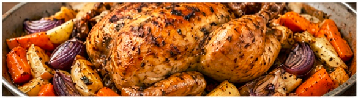

Herb-Roasted Chicken with Root Vegetable
A simple and comforting roast chicken with garlic, herbs, and seasonal root vegetables. Perfect for Sunday dinner
or a cozy night in.
Prep Time: 20 mins | Cook Time: 1 hr 15 mins | Servings: 4 to 6
Ingredients
- 1 whole chicken (about 4 to 5 lbs)
- 2 tbsp olive oil
- 3 cloves garlic, minced
- 1 tbsp chopped fresh rosemary
- 1 tbsp chopped fresh thyme
- 1 tsp salt
- 1½ tsp black pepper
- 4 carrots, peeled and cut into chunks
- 2 parsnips, peeled and cut into chunks 4 small potatoes, halved
- 1 red onion, cut into wedges
Instructions
- Preheat oven to 425°F (220°C). 2. Pat the chicken dry with paper towels.
- In a small bowl, mix olive oil, garlic, rosemary, thyme, salt, and pepper. Rub all over the chicken,
including under the skin.
- Place the chicken in a roasting pan, brea breast side up.
- Arrange the vegetables around the chicken.
- Roast for 1 hour 15 minutes, or until the chicken reaches 165°F (74°C) in the thickest part of the thigh.
- Let rest for 10 minutes before carving.
Nutrition & Timing
| Amount Per Serving (based on 6 servings) |
Nutrition |
-- |
Timing |
| Calories |
420 kcal |
Prep Time |
20 mins |
Protein |
32 g |
Cook Time |
1 hr 15 mins |
| Carbohydrates |
28 g |
Total Time |
1 hr 15 mins |
| Fat |
18 g |
-- |
-- |
| Fiber |
5 g |
-- |
-- |
| Sugar |
6 g |
-- |
-- |
| Sodium |
520 mg |
-- |
-- |
▼ Chef's Tips
For extra crispy skin, roast uncovered for the last 15 minutes.
Save the pan drippings for a quick gravy.